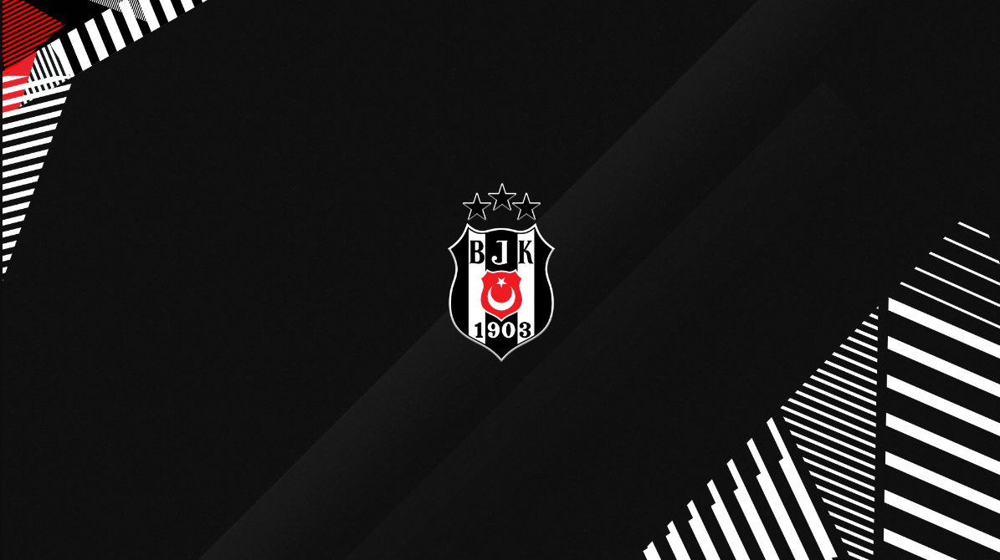

Besiktas
Besiktas Season Results in 2000's

Beşiktaş Jimnastik Kulübü, also known simply as Beşiktaş is a Turkish sports club founded in 1903 that is based in the Beşiktaş district of Istanbul.The club's football team is one of the Big Three in Turkey and one of the most successful teams in the country, having never been relegated to a lower division. It was the first registered sports club in the country and one of the few that acquired the right to bear the Turkish flag on its crest.
Here's the Besiktas Season Results:
- 2000-2001 - Finished 4th. with 64 points. Most scorer is Pascal Nouma with 22 goals.
- 2001-2002 - Finished 3rd. with 62 points. Most scorer is İlhan Mansız with 24 goals.
- 2002-2003 - Finished 1st. with 85 points and became CHAMPION!!! Most scorer is İlhan Mansız with 14 goals.
- 2003-2004 - Finished 3rd. with 62 points. Most scorer is Ahmet Hassan with 14 goals.
- 2004-2005 - Finished 4th. with 69 points. Most scorer is John Carew with 14 goals.
- 2005-2006 - Finished 4th. with 54 points. Most scorer is Gökhan Güleç with 11 goals.
- 2006-2007 - Finished 2nd. with 61 points. Most scorer is Bobo with 20 goals.
- 2007-2008 - Finished 3rd. with 73 points. Most scorer is Bobo with 16 goals.
- 2008-2009 - Finished 1st. with 71 points and became CHAMPION!!! Most scorer is Bobo with 19 goals.
- 2009-2010 - Finished 4th. with 64 points. Most scorer is Bobo with 14 goals.
- 2010-2011 - Finished 5th. with 54 points. Most scorer is Bobo with 16 goals.
- 2011-2012 - Finished 4th. with 55 points. Most scorer is Hugo Almeida with 14 goals.
- 2012-2013 - Finished 3rd. with 58 points. Most scorer is Filip Holosko with 12 goals.
- 2013-2014 - Finished 3rd. with 62 points. Most scorer is Hugo Almeida with 15 goals.
- 2015-2016 - Finished 1st. with 79 points and became CHAMPION!!!(its my favorite) Most scorer is Mario Gomez with 28 goals.
- 2016-2017 - Finished 1st. with 77 points and became CHAMPION!!! Most scorer is Cenk Tosun with 24 goals.
- 2017-2018 - Finished 4th. with 71 points. Most scorer is Anderson Talisca with 20 goals.
- 2018-2019 - Finished 3rd. with 65 points. Most scorer is Burak Yılmaz with 11 goals.
- 2019-2020 - Finished 3rd. with 62 points. Most scorer is Burak Yılmaz with 14 goals.
- 2020-2021 - Finished 1st. with 84 points and became CHAMPION!!! Most scorer is Cyle Larin with 23 goals.
- 2021-2022 - Finished 6th. with 59 points. Most scorer is Michy Batshuayi with 14 goals.